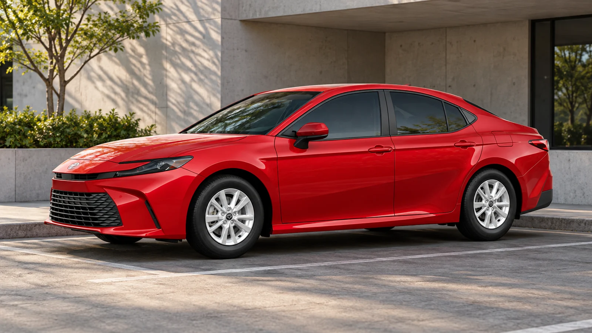
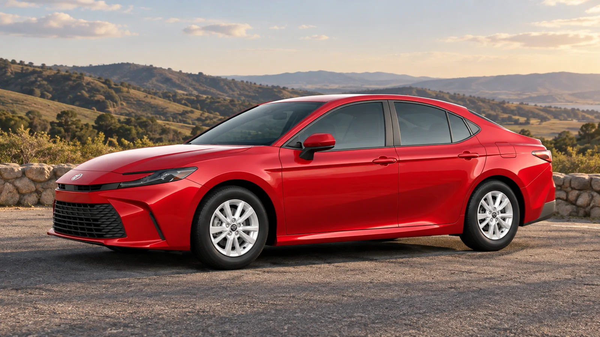

Start with the journeys you actually make
The cheapest car to run is not necessarily the cheapest car to own. A vehicle can save money at every fill-up and still cost more over five years if the purchase premium, borrowing costs or depreciation outweigh those savings. The comparison becomes useful when every assumption is visible.
Begin with annual distance and the mix of journeys. A commuter with convenient overnight charging faces a different calculation from someone who depends on public fast charging. The Department of Energy’s vehicle-cost tool similarly asks about driving habits, efficiency, purchase price and energy costs.
For our worked example, assume 12,000 miles a year and gasoline at $3.50 per U.S. gallon. Compare a hypothetical 30-mpg gasoline car, a 50-mpg hybrid and an EV using 28 kWh per 100 miles at the wall. These are chosen inputs, not measurements from the pictured Camry.

Put energy costs on the same basis
| Gasoline: 12,000 ÷ 30 × $3.50 | $1,400 per year |
|---|---|
| Hybrid: 12,000 ÷ 50 × $3.50 | $840 per year |
| EV at home: 3,360 kWh × $0.16 | $537.60 per year |
| EV using public charging: 3,360 kWh × $0.45 | $1,512 per year |
The result is arithmetic, not a universal verdict. At the assumed home rate, the EV saves $862.40 annually against the gasoline example. At the assumed public rate, it costs $112 more in energy. Changing where the electricity is bought changes the conclusion without changing the car.
Our EV input already includes wall-side consumption. If you instead start with energy drawn from the battery, account for charging losses before multiplying by the electricity tariff. Adding losses to an already wall-inclusive figure would count them twice.
Use the Fuel Cost Calculator for the gasoline and hybrid examples. The EV Charging Calculator helps price individual sessions; annual ownership also needs your yearly mileage and realistic home/public charging mix. Include session fees when they apply.
The payment can hide the price of borrowing
Now assume a $28,000 amount financed at a 6% annual rate, with equal monthly payments over 60 months and no fees. The standard amortization formula gives about $541.32 a month and $4,479.11 in total interest. These are estimates from unrounded calculations; an actual lender’s schedule can differ.
The CFPB recommends comparing the amount financed, rate, term and total costs instead of considering the monthly payment alone. A longer term can lower the monthly bill while increasing interest.
Run a proposed deal through the Loan Calculator, then compare it with the lender’s disclosures. Our calculator models equal monthly payments using the annual rate entered; lender fees and an APR that incorporates fees require additional attention. Keep the down payment visible in your cash budget.

Count depreciation once, then test the assumptions
For an economic ownership comparison, use purchase price minus resale value, then add interest, energy, insurance, taxes, maintenance and repairs. Do not add the entire purchase price or loan principal again after including depreciation. That would count the same capital cost twice.
Suppose a hypothetical car costs $35,000 and sells for $18,000 after five years. The depreciation cost is $17,000. That single assumption can matter more than several years of energy savings. Try a lower resale value and see whether your preferred option still fits the budget.
The Depreciation Calculator projects a standard curve, rather than predicting a specific future transaction. Obtain comparable used-car prices and make both optimistic and cautious scenarios. Get actual insurance quotes for the configurations under consideration, and add installation costs if home charging requires electrical work.
Finally, keep cash flow and ownership cost as separate views of the same purchase. One tells you whether the monthly bills fit. The other tells you what the car costs over the period you keep it. A decision is easier to defend when both views work, using assumptions you can explain.
Sources & image references
Checked October 12, 2026. Analysis is original; externally reported specifications and measurements are linked above.
Keep exploring